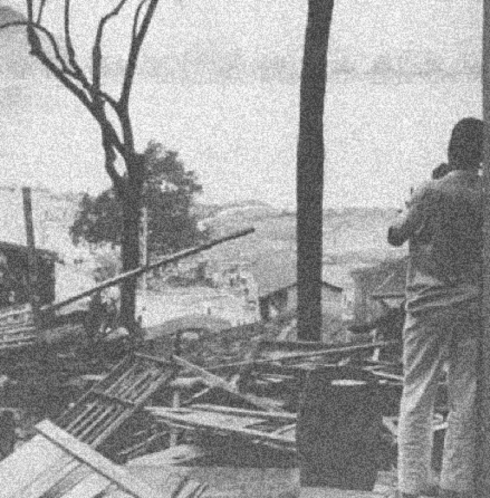

quem não pertence À BANDEIRA
A maior parte das vítimas identificadas no Terceiro Volume do Relatório Final da CNV corresponde a um perfil específico das vítimas da ditadura.
Embora o Segundo Volume dedique um capítulo à morte de trabalhadores, camponeses e indígenas, a Comissão apresenta lacunas na identificação dessas pessoas, que, em sua maioria, permanecem sem nome, rosto ou história.
Nesse sentido, o relatório final narra as histórias das vítimas fatais da ditadura, ao mesmo tempo em que inscreve em seu texto, através de lacunas e silêncios, uma série de biografias faltantes. Nomeia, reconhece e publiciza graves violações de direitos humanos, ao mesmo tempo em que oculta, e exclui violências e vítimas.

Moradores de favelas e periferias foram especialmente afetados por remoções em massa de suas casas; um exemplo disso é a destruição da Favela da Catacumba em 1968. A população negra também se destacou como alvo das ações repressivas das polícias políticas estaduais. Embora algumas comissões da verdade estaduais tenham buscado preencher essas lacunas, muitas dessas vítimas continuam ausentes no Terceiro Relatório.
“Fomos tirados dessas comunidades [Favela da Praia do Pinto, Ilha das Dragas e Ilha dos Caiçaras] como animais. Na época, a COMLURB tinha caminhões com janelinhas iguais as dos trens. O governo, a Polícia Militar e a COMLURB iam botando nossas coisas pra cima dos caminhões de lixo, metendo pé de cabra e marreta nos barracos, derrubando. Não respeitavam as crianças, não respeitavam os mais velhos e não é diferente hoje. A mesma coisa que acontecia na época da ditadura, acontece hoje.”